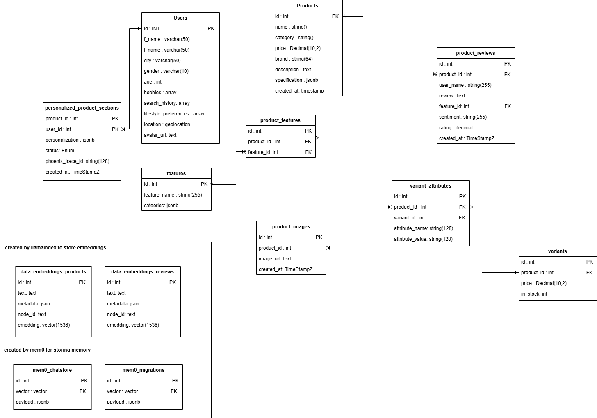

1.4 Backend Data Structures¶
This section provides an overview of the core database schema and data artifacts used in the AgenticShop backend. It highlights key tables and fields that enable AI-powered personalization, semantic search, review analysis, and conversational AI. It also explains how these components are leveraged by backend services and Azure AI integrations.
Understanding the Table Schema¶
AgenticShop processes user profiles, product catalogs, product variants, customer reviews, product features, personalized content, and chat interactions using a structured PostgreSQL schema. Below is an overview of the key tables and their roles:
Core Tables & Their Purpose¶
| Table | Description |
|---|---|
users |
Stores user profiles, including preferences (hobbies, lifestyle), demographics, and search history. Used for personalization. |
products |
Contains core product catalog information, specifications (JSONB), pricing, and descriptions. |
product_images |
Stores URLs for product images, linked to the products table. |
features |
Defines distinct product features (e.g., "Water Resistance", "Battery Life") and their applicable categories (JSONB). |
product_features |
A junction table linking products to their respective features (many-to-many relationship). |
variants |
Represents specific variations of a product (e.g., based on color, size), including price and stock levels. |
variant_attributes |
Stores key-value attributes for each product variant (e.g., attribute_name: "Color", attribute_value: "Blue"). |
product_reviews |
Stores customer reviews, ratings, associated product, user, and AI-extracted sentiment and feature ID. |
personalized_product_sections |
Stores AI-generated personalized content (JSONB) for specific user-product combinations, including status and tracing IDs for AI workflows. |
embeddings_products |
Vector store holding embeddings for product data (e.g., name, description, category) to enable semantic search for products. |
embeddings_reviews |
Vector store holding embeddings for product review text to enable semantic search and analysis of reviews. |
How These Tables Work Together¶
- User data (
users) provides context for personalization. - Product information (
products,product_images,features,product_features,variants,variant_attributes) forms the catalog that AI agents interact with. - Customer reviews (
product_reviews) are processed by AI to extract sentiment and identify key features discussed. - Embeddings (
embeddings_products,embeddings_reviews) are generated from product and review text, enabling semantic search and retrieval. - AI agents generate personalized content (
personalized_product_sections) based on user profiles, product data, reviews, and inventory status. - Apache AGE graph data (derived from these tables) models relationships between products, reviews, and features for advanced analytics and explainable AI.

Key Fields Used in AI Processing¶
AgenticShop integrates with Azure AI services, vector databases, and graph databases to extract, validate, personalize, and process information. Below are key fields that play a crucial role in these AI workflows:
Relational, Vector & AI Fields¶
| Field Name | Table(s) | AI Usage |
|---|---|---|
embedding |
embeddings_products, embeddings_reviews |
Stores vector embeddings for semantic search, similarity retrieval, and RAG for products and reviews. |
personalization |
personalized_product_sections |
JSONB field storing structured AI-generated content (features, descriptions) tailored to the user and product. |
specifications |
products |
JSONB field for flexible product attributes; can be used by AI to match user needs or extract detailed info. |
review (text) |
product_reviews |
Raw text of customer reviews, processed by NLP models for sentiment analysis and feature extraction. |
sentiment |
product_reviews |
AI-extracted sentiment (positive, negative, neutral) from review text. |
feature_id |
product_reviews, product_features |
Links reviews and products to specific features, enabling targeted analysis and feature-based recommendations. |
attribute_name, attribute_value |
variant_attributes |
Used by AI (e.g., Inventory Agent) to find product variants matching user preferences (e.g., color, size). |
hobbies, lifestyle_preferences, search_history, age, gender, location |
users |
User profile attributes used by AI agents to understand user context and personalize recommendations/content. |
status |
personalized_product_sections |
Tracks the state of AI content generation workflows (pending, running, done, failed). |
phoenix_trace_id |
personalized_product_sections |
Links to observability platforms (like Arize Phoenix) for tracing and debugging AI agent execution. |
Apache AGE Graph Relationships (product_review_graph)¶
| Node/Edge Type | Description in Graph | AI Usage |
|---|---|---|
Product (Node) |
Represents a product with properties like id, name, category. |
Central entity for linking reviews and features; used in graph traversals for recommendations. |
Review (Node) |
Represents a customer review with id, product_id, feature_id, sentiment, text. |
Source of sentiment and feature linkage; used to find influential reviews or feature-specific feedback. |
Feature (Node) |
Represents a specific product feature with id, name, categories. |
Target for review sentiment; helps identify highly-rated or problematic features. |
HAS_FEATURE (Edge) |
Connects Product nodes to Feature nodes. |
Establishes which features a product possesses. |
HAS_REVIEW (Edge) |
Connects Product nodes to Review nodes. |
Links products to all their associated reviews. |
positive_sentiment (Edge) |
Connects Review to Feature (props: sentiment, product_id, feature_id). |
Highlights positive feedback on specific features, useful for AI-driven summarization or recommendations. |
negative_sentiment (Edge) |
Connects Review to Feature (props: sentiment, product_id, feature_id). |
Highlights negative feedback on specific features, identifying areas for improvement or caution. |
neutral_sentiment (Edge) |
Connects Review to Feature (props: sentiment, product_id, feature_id). |
Captures neutral mentions of features. |
Why These Fields and Structures Matter¶
- Vector embeddings (
embedding) inembeddings_productsandembeddings_reviewsenable semantic search, allowing AI to find relevant products or reviews based on meaning rather than just keywords. - Personalized content (
personalizationinpersonalized_product_sections) stores the direct output of AI agents, delivering tailored experiences to users. - JSONB fields (
specifications,personalization) provide flexibility for AI agents to work with evolving data structures and store rich, nested information. - Graph relationships in
product_review_graphsupport GraphRAG (Retrieval-Augmented Generation) and complex queries, allowing AI to understand interconnectedness (e.g., "show me products with highly-rated 'battery life' reviews"). - Observability fields (
phoenix_trace_id) are crucial for monitoring and debugging complex multi-agent AI systems.
Apache AGE Graph Structure (product_review_graph)¶
The product_review_graph is created using Apache AGE to model relationships between products, their features, and customer reviews. This graph enables complex queries and insights that are valuable for AI-driven analysis and recommendations.
Nodes (Vertices)¶
-
Product: Represents a product.
- Properties:
id(integer),name(string),category(string) - Example:
(p:Product {id: 101, name: 'SmartWatch X200', category: 'Electronics'})
- Properties:
-
Review: Represents a customer review.
- Properties:
id(integer),product_id(integer),feature_id(integer, nullable),sentiment(string),text(string) - Example:
(r:Review {id: 5001, product_id: 101, feature_id: 10, sentiment: 'positive', text: 'Great battery life!'})
- Properties:
-
Feature: Represents a specific product feature.
- Properties:
id(integer),name(string),categories(jsonb array of strings) - Example:
(f:Feature {id: 10, name: 'Battery Life', categories: ['Electronics', 'Wearables']})
- Properties:
Relationships (Edges)¶
-
Product
-[HAS_FEATURE]->Feature: Indicates that a product has a particular feature.- Direction: Product to Feature
- Example:
(p:Product)-[:HAS_FEATURE]->(f:Feature)
-
Product
-[HAS_REVIEW]->Review: Links a product to one of its reviews.- Direction: Product to Review
- Example:
(p:Product)-[:HAS_REVIEW]->(r:Review)
-
Review
-[positive_sentiment]->Feature: Links a review to a feature when the review expresses positive sentiment about that feature.- Direction: Review to Feature
- Properties on edge:
sentiment(string, e.g., "positive"),product_id(integer),feature_id(integer) - Example:
(r:Review)-[:positive_sentiment {sentiment: 'positive', product_id: 101, feature_id: 10}]->(f:Feature)
-
Review
-[negative_sentiment]->Feature: Links a review to a feature when the review expresses negative sentiment about that feature.- Direction: Review to Feature
- Properties on edge:
sentiment(string, e.g., "negative"),product_id(integer),feature_id(integer) - Example:
(r:Review)-[:negative_sentiment {sentiment: 'negative', product_id: 102, feature_id: 12}]->(f:Feature)
-
Review
-[neutral_sentiment]->Feature: Links a review to a feature when the review expresses neutral sentiment or a factual mention of that feature.- Direction: Review to Feature
- Properties on edge:
sentiment(string, e.g., "neutral"),product_id(integer),feature_id(integer) - Example:
(r:Review)-[:neutral_sentiment {sentiment: 'neutral', product_id: 103, feature_id: 15}]->(f:Feature)
This graph structure allows AI agents to perform queries like: * "Find all positive reviews related to the 'Camera Quality' feature for 'Smartphone Model Z'." * "Which features are most frequently mentioned negatively for products in the 'Laptops' category?" * "Show products similar to Product X that have good reviews on 'Durability'."
Graph Diagram¶
The following diagram illustrates the relationships between the primary nodes in the product_review_graph:
| Text Only | |
|---|---|
1 2 3 4 5 6 7 8 9 10 11 | |
Explanation of Diagram:
- Nodes:
[Product]: Represents a product.[Feature]: Represents a product feature.[Review]: Represents a customer review.
- Edges (Relationships):
Product --HAS_FEATURE--> Feature: A product has one or more features.Product --HAS_REVIEW--> Review: A product has one or more reviews.Review --positive_sentiment--> Feature: A review expresses positive sentiment towards a specific feature. (Edge has properties)Review --negative_sentiment--> Feature: A review expresses negative sentiment towards a specific feature. (Edge has properties)Review --neutral_sentiment--> Feature: A review expresses neutral sentiment or mentions a specific feature. (Edge has properties)
This diagram provides a simplified visual representation of how products, features, and reviews are interconnected within the graph database, enabling complex queries for AI-driven insights.